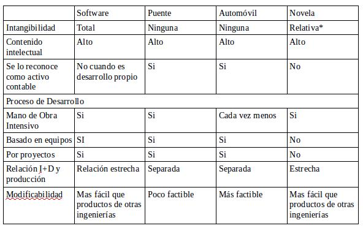

IS 1 - T - AyDS | TP 1
Trabajo Práctico 1
Krmpotic - Murillo - Soto - Serruya Aloisi - Toledo Margalef
Punto 2
- Definición
- Explicación
- Vamo a armar bardoooo!
Punto 3
Crisis del Software
- Durante los años 70
- Fracaso de los proyectos de Software
- Razones
- Planificación de proyecto y estimación de costos imprecisa
- Mala calidad en el Software desarrollado
- Mantenimiento casi imposible
- A raíz de esto surge la Ingeniería de Software
Punto 4
Similitudes y diferencias de la Ingeniería de Software con otras ingenierías
- Similitudes
- Ambas solucionan problemas en la vida de las personas
- Diferencias
- La Ingeniería de Software genera un producto intangible
- Potencialmente modificable hasta el infinito
- La Ingeniería de Software genera un producto intangible
Punto 6
Maleabilidad del Software
- Parece blando
- Sólo cambiando líneas de código
- El cambio debe reflejarse tanto en el codigo como en el diseño
- Debe estudiarse cómo se afecta al sistema completo
Punto 7
Comparación del Software con productos de otras ingenierías
